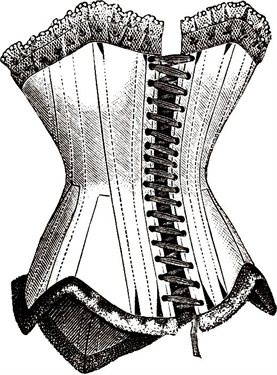

CORPS
(image)
"Y a-t-il une distinction entre l'esprit et le corps ?
Si oui, lequel vaut-il mieux avoir ?" Woody ALLEN
Si oui, lequel vaut-il mieux avoir ?" Woody ALLEN
Comment se fait-il que le corps est perçu comme une entité ? Comment les sensations issues d'organes, de muscles, de segments cutanés et d’articulations sont-elles intégrées les unes aux autres pour former un tout reconnaissable par l’individu qui l’habite ? En effet, le corps n’est pas qu’un objet physique, c’est aussi et surtout la manifestation principale d’un "soi", d’un être subjectif porteur d’états mentaux et animé de comportements et de ressentis affectifs. Le corps dans sa représentation inclut alors son image.
L’image du corps est cette image que nous formons dans notre esprit à partir de nos perceptions sensorielles et nos émotions. C'est une représentation en perpétuelle mutation et c'est à travers cette représentation imagée que nous éprouvons qu’il y a une unité du corps. Pourtant, l'image du corps n'est qu'une illusion.
En médecine psychiatrique, la persuasion d’avoir un défaut corporel est classifiée dans les troubles Somatoformes. Ce trouble est diagnostiqué comme la peur d’une dysmorphie corporelle. Divers intitulés spécifient cette pathologie : Body Dysmorphic Disorder (B.D.D), dysmorphophobie, dysmorphesthésie ou encore Complexe d’Adonis. Cette distorsion de la perception de l’image du corps implique que les fixations peuvent rapidement devenir obsessionnelles et compulsives. S’il y a à combler ou à rectifier, c’est qu’il y a un trou, une dépression, tant dans le sens sémantique que pathologique, car il est courant de trouver une comorbidité de la dépression avec les troubles de l'image du corps.
L'image ne parle pas, elle fait parler. Cette dichotomie d’apparence laisse alors afficher une souffrance engendrant une survalorisation fantasmatique de son image idéalisée. Avoir un corps, c’est donc avoir une représentation imaginaire. Naît de la subjectivité de l’esthétisme corporel, le trouble de l’émotion de la beauté. La dysmorphie devient alors, plus qu’une peur d’une déformation corporelle, une maladie des émotions, du ressenti de son propre corps, un trouble du sentiment esthétique de l’image de soi. C’est la maladie des images du corps.
Cette image prend sa valeur en fonction de la position spatiale de l’œil, du regard intérieur. C’est en fonction de cette dernière précision que l’image n’est jamais la même, lui donnant cette qualité d’illusion anamorphique.
Offrons-nous cette compréhension que le sujet souffrant de son corps par sa représentation imaginaire, croit qu’il le possède. Pourtant il ne l’a pas, mais son corps est sa seule consistance. Ce que le sujet possède ce sont des images de son corps et nous avons vu que c’est de l’ordre de l’illusion.
L’image du corps est cette image que nous formons dans notre esprit à partir de nos perceptions sensorielles et nos émotions. C'est une représentation en perpétuelle mutation et c'est à travers cette représentation imagée que nous éprouvons qu’il y a une unité du corps. Pourtant, l'image du corps n'est qu'une illusion.
En médecine psychiatrique, la persuasion d’avoir un défaut corporel est classifiée dans les troubles Somatoformes. Ce trouble est diagnostiqué comme la peur d’une dysmorphie corporelle. Divers intitulés spécifient cette pathologie : Body Dysmorphic Disorder (B.D.D), dysmorphophobie, dysmorphesthésie ou encore Complexe d’Adonis. Cette distorsion de la perception de l’image du corps implique que les fixations peuvent rapidement devenir obsessionnelles et compulsives. S’il y a à combler ou à rectifier, c’est qu’il y a un trou, une dépression, tant dans le sens sémantique que pathologique, car il est courant de trouver une comorbidité de la dépression avec les troubles de l'image du corps.
L'image ne parle pas, elle fait parler. Cette dichotomie d’apparence laisse alors afficher une souffrance engendrant une survalorisation fantasmatique de son image idéalisée. Avoir un corps, c’est donc avoir une représentation imaginaire. Naît de la subjectivité de l’esthétisme corporel, le trouble de l’émotion de la beauté. La dysmorphie devient alors, plus qu’une peur d’une déformation corporelle, une maladie des émotions, du ressenti de son propre corps, un trouble du sentiment esthétique de l’image de soi. C’est la maladie des images du corps.
Cette image prend sa valeur en fonction de la position spatiale de l’œil, du regard intérieur. C’est en fonction de cette dernière précision que l’image n’est jamais la même, lui donnant cette qualité d’illusion anamorphique.
Offrons-nous cette compréhension que le sujet souffrant de son corps par sa représentation imaginaire, croit qu’il le possède. Pourtant il ne l’a pas, mais son corps est sa seule consistance. Ce que le sujet possède ce sont des images de son corps et nous avons vu que c’est de l’ordre de l’illusion.

Où se place alors la souffrance issue de ces images déformées ? Si l’on reste au registre du réel et de l’organique, la douleur est nociceptive et biologique. Nous pensons alors d’avantage au symbolisme qui nous montre dans ce registre, que si il y a douleur, il y a symptôme et autre que son rôle d’unification, il est présent chez le sujet pour signifier qu’il y a quelque chose à dire et en premier lieu une association incohérente entre image et corps.
C'est à l’issue de la reconnaissance et de l’intégration de cette image spéculaire idéalisée ou biaisée, que nous allons tant psychiquement que corporellement nous délimiter. Si cette image dans sa conception est lésée, altérée, le corps alors pourra devenir le support d’une souffrance profonde liée à cette image non conforme dans l’attente et le vécu. Il s’en suivra et ceci pour minimiser les souffrances internes, l’usage de possibles stratégies adaptatives. Ces dernières placées comme garde fou et pouvant ce matérialiser par des manies, des phobies, des toxicomanies ou tous comportements et pratiques permettant la régulation des tensions profondes.
On peut aussi voir le corps comme l'interface entre notre intériorité et l'environnement. Il favorise les échanges avec celui-ci. Les interprétations de ses échanges informatifs entre notre dedans et notre dehors peuvent parfois porter à confusion, distorsion ou mauvaise interprétation. Rappelez-vous que notre corps est la seule demeure où nous vivons avec nous-même. Alors ne surtout pas omettre qu'il est, sinon le support, le réceptacle de nos émotions. Autant y être confortable et pour cela, écoutez-le !
Ici, l'hypnose va favoriser une élaboration tant projective qu'émotionnellement constructive autour du corps, de ses représentations et de ses ressentis en favorisant l'acceptation.
C'est à l’issue de la reconnaissance et de l’intégration de cette image spéculaire idéalisée ou biaisée, que nous allons tant psychiquement que corporellement nous délimiter. Si cette image dans sa conception est lésée, altérée, le corps alors pourra devenir le support d’une souffrance profonde liée à cette image non conforme dans l’attente et le vécu. Il s’en suivra et ceci pour minimiser les souffrances internes, l’usage de possibles stratégies adaptatives. Ces dernières placées comme garde fou et pouvant ce matérialiser par des manies, des phobies, des toxicomanies ou tous comportements et pratiques permettant la régulation des tensions profondes.
On peut aussi voir le corps comme l'interface entre notre intériorité et l'environnement. Il favorise les échanges avec celui-ci. Les interprétations de ses échanges informatifs entre notre dedans et notre dehors peuvent parfois porter à confusion, distorsion ou mauvaise interprétation. Rappelez-vous que notre corps est la seule demeure où nous vivons avec nous-même. Alors ne surtout pas omettre qu'il est, sinon le support, le réceptacle de nos émotions. Autant y être confortable et pour cela, écoutez-le !
Ici, l'hypnose va favoriser une élaboration tant projective qu'émotionnellement constructive autour du corps, de ses représentations et de ses ressentis en favorisant l'acceptation.
EN RELATION


PSYCHOSOMA
SYMPTÔME
EMOTION
DISSOCIATION
COMPORTEMENT
IDENTITE